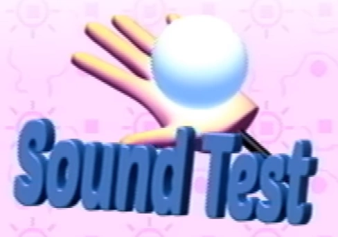

Sound Test graphic
The sound test menu is a part of the options menu that allows the player to browse various sounds. Some show as "????" -- whether they are undiscovered or merely unnamed is unclear, but the video names at least some sounds that have not been heard in their presumed game context in the released Petscop videos.
The listing ends at "85". These numbers are given in hexadecimal, and there are 134 total sounds.
The graphic on the menu seems to reference Pen. However, it has 5 fingers, while Pen has 6. Pen is also deaf and does not know about music or sound.
A cheat code can be entered here to access a secret menu.
After the events of Petscop, the channel officially released the soundtrack of the game, using the same white sphere shown as thumbnail.
| Type | Number | Name | Use |
|---|---|---|---|
| Music | 00 | Garalina | The Garalina intro |
| Music | 01 | Petscop | The Petscop start theme |
| Music | 02 | The Gift Plane | The music of the Gift Plane |
| Music | 03 | Even Care (Level 1) | The music of the regular Even Care |
| Music | 04 | Work Zone (Level 2) | Plays in Odd Care and older versions of Even Care. Intended as the music of an unused second level. |
| Music | 05 | ???? | |
| Music | 06 | ???? | |
| Music | 07 | ???? | |
| Music | 08 | ???? | |
| Music | 09 | Birthday | The music playing in the main room of the house during Strange situation |
| Music | 0A | OOC | Presumably the eerie music that plays around the house during Strange situation - "OOC" means "out of character", and Care's "stop fucking ignoring me" speech could be seen as that |
| Music | 0B | ???? | |
| Music | 0C | Driving | The ambient music that plays on the road with the clock before the school |
| Music | 0D | School | The music in the first and third floors of the school |
| Music | 0E | Girl World | The music played when close to the girl image on the school's second floor |
| Music | 0F | ???? | |
| Music | 10 | Explore 1 | The music played in the master bedroom in Marvin's demo at the beginning of Petscop 14 (under soundtrack as "explore-min") |
| Music | 11 | Explore 2 | The music played during use of Room Impulse (under soundtrack as "explore") |
| Music | 12 | ???? | |
| SFX | 13 | Go Back | The sound played when closing a selection in menus |
| SFX | 14 | Pause 1 | One of the sounds when opening the pause menu |
| SFX | 15 | Pause 2 | One of the sounds when opening the pause menu |
| SFX | 16 | Pause 3 | One of the sounds when opening the pause menu |
| SFX | 17 | Next Option 1 | One of the sounds when navigating between option items in the pause menu |
| SFX | 18 | Next Option 2 | One of the sounds when navigating between option items in the pause menu |
| SFX | 19 | Choose Option | The sound played when choosing an option item in the pause menu |
| SFX | 1A | Next Pet | The sound played when switching between modules in the pets menu - reused when browsing listings in the recording menu or rooms in Room Impulse |
| SFX | 1B | Choose Pet | The sound played when choosing a module in the pets menu - reused when choosing an entry in the recording menu or a room in Room Impulse |
| SFX | 1C | Quit | The sound played when the Quit option is selected in the pause menu |
| SFX | 1D | Press Start | The sound played when pressing start to advance the title screen - reused when selecting one of the board games |
| SFX | 1E | Next File | The sound played when browsing between files on the file select screen |
| SFX | 1F | Choose File | The sound played when an empty file is selected |
| SFX | 20 | Next Letter | The sound played when moving between letters when naming a new file |
| SFX | 21 | Gotcha | The jingle played when a pet is caught |
| SFX | 22 | Amber Cry | The sound Amber makes when caught |
| SFX | 23 | Randice Cry | The sound Randice makes when caught |
| SFX | 24 | Pen Cry | The sound Pen makes when caught |
| SFX | 25 | Toneth Cry | The sound Toneth makes when caught |
| SFX | 26 | Roneth Cry | The sound Roneth makes when caught |
| SFX | 27 | Wavey Cry | The sound Wavey makes when caught |
| SFX | 28 | Amber Jump | The sound Amber makes when jumping to the other side of her cage |
| SFX | 29 | Amber Thump | The sound Amber makes when landing on the other side of her cage |
| SFX | 2A | Randice Bonk | The sound Randice makes when he reappears at a location where the bucket is at - reused when catching Roneth in the bucket, getting hit by the car as a shadow monster man, and in Graverobber |
| SFX | 2B | Randice Pop | The sound Randice makes when he reappears at a different location |
| SFX | 2C | Randice Drop | The sound Randice makes when he drops down to move to a different location |
| SFX | 2D | Randice Thirsty | The sound Randice makes when Wavey is no longer supplying him with water |
| SFX | 2E | Randice Very Thirsty | The sound Randice makes when he has wilted from lack of water |
| SFX | 2F | ???? | |
| SFX | 30 | ???? | |
| SFX | 31 | Bucket Push | Sound loop that plays when the bucket is pushed |
| SFX | 32 | Wavey Rain | The sound loop playing from Wavey's raining |
| SFX | 33 | Wavey Appear | The sound Wavey makes when he reappears at a different location |
| SFX | 34 | Wavey Disappear | The sound Wavey makes when he dissolves to move to a different location |
| SFX | 35 | Beep | The sound played when the treadmill changes number |
| SFX | 36 | Treadmill | Sound loop that plays while the treadmill is being used |
| SFX | 37 | Actions Appear | The sound that plays when the interact prompt appears for an object |
| SFX | 38 | Piece 1 | One of the sounds when collecting pieces |
| SFX | 39 | Piece 2 | One of the sounds when collecting pieces |
| SFX | 3A | Piece 3 | One of the sounds when collecting pieces |
| SFX | 3B | Text Appear 1 | The regular textbox progression sound, when text appears |
| SFX | 3C | Text Next | The snap sound played when a textbox set is progressed |
| SFX | 3D | Text Done | The clap sound played when a textbox is closed |
| SFX | 3E | Start | The sound that plays after entering the code in Roneth's room |
| SFX | 3F | Car Pass | The sound of a car passing by from the tunnel |
| SFX | 40 | Care A Cry | The sound Care A makes when caught |
| SFX | 41 | Care B Cry | The sound Care B makes when caught |
| SFX | 42 | Care NLM Cry | The sound Care NLM makes when caught |
| SFX | 43 | ???? | |
| SFX | 44 | Windmill | The ominous noise that plays when watching the Windmill |
| SFX | 45 | Good Pluck | The sound played on an even to odd ("loves me") pluck of the flower in the Flower Shack |
| SFX | 46 | Bad Pluck | The sound played on an odd to even ("loves me not") pluck of the flower in the Flower Shack |
| SFX | 47 | Child Library Error | The sound played when attempting to place a non-human pet into the Child Library |
| SFX | 48 | Choose Child | The sound played when successfully dropping a child off at the Child Library, in the machine, or the egg in the locker - reused when initializing recording playback or Room Impulse |
| SFX | 49 | ???? | |
| SFX | 4A | Leaving | Unknown |
| SFX | 4B | Wheel Turn | The sound of the hatch opening/closing at the Child Library or the machine |
| SFX | 4C | Pick Up Key | The sound played when the player gets a key |
| SFX | 4D | Open Gift | The sound played when opening a gift in the party room |
| SFX | 4E | 1997 Calendar | The sound played when viewing the green calendar from 1997 in the house |
| SFX | 4F | 2000 Calendar | The sound played when viewing the gray calendar from 2000 in the house |
| SFX | 50 | 1997 Calendar Again | The sound played when viewing the green calendar from 1997 in the house (birthday variation) |
| SFX | 51 | Your Calendar | The sound played when viewing the red calendar in the house (birthday variation) |
| SFX | 52 | ???? | |
| SFX | 53 | ???? | |
| SFX | 54 | Dial | The sound played when interacting with dials such as the lock and on Room Impulse |
| SFX | 55 | Focus | The sound played when selecting a particular player on Room Impulse |
| SFX | 56 | Unfocus | The sound played when reverting to general view on Room Impulse |
| SFX | 57 | ???? | |
| SFX | 58 | ???? | |
| SFX | 59 | ???? | |
| SFX | 5A | ???? | |
| SFX | 5B | ???? | |
| SFX | 5C | ???? | |
| SFX | 5D | Text Appear 2 | The harsher textbox progression sound, when text appears. Appears in Petscop 14. |
| SFX | 5E | Calendar Flip | The sound played when switching between months on the calendar |
| SFX | 5F | Zoom | Sound played when inspecting a disc in the house |
| SFX | 60 | Zoom (Here) | Sound played when inspecting a specific disc in the house |
| SFX | 61 | Whoosh | Sound played when exiting a zoom from a disc to the disc selection in the house - reused during turns when the player is pulled in front of the girl image on the school's second floor |
| SFX | 62 | Paint | Sound played when painting the wall in the master bedroom |
| SFX | 63 | ???? | |
| SFX | 64 | Thump | Sound played when running into a door in Strange situation |
| SFX | 65 | ???? | |
| SFX | 66 | Draw Mode | The sound played when activating or closing Draw Mode |
| SFX | 67 | Draw | Sound loop that plays when drawing on textures in Draw Mode |
| SFX | 68 | Guided | Sound played when player is initially turned to being pulled in front of the girl image on the school's second floor |
| SFX | 69 | Guided Movement | Sound loop that plays when being pulled in front of the girl image on the school's second floor |
| SFX | 6A | ???? | |
| SFX | 6B | ???? | |
| SFX | 6C | Head Button | The sound of P2 to TALK button presses appearing above the Guardian's head |
| SFX | 6D | ???? | |
| SFX | 6E | Marvin Message | Marvin's P2 to TALK message sound |
| SFX | 6F | Belle Message | Tiara's P2 to TALK message sound |
| SFX | 70 | Care Message | "Pall"'s P2 to TALK message sound |
| SFX | 71 | ???? | |
| SFX | 72 | ???? | |
| SFX | 73 | ???? | |
| SFX | 74 | ???? | |
| SFX | 75 | ???? | |
| SFX | 76 | ???? | |
| SFX | 77 | ???? | |
| SFX | 78 | ???? | |
| SFX | 79 | ???? | |
| SFX | 7A | ???? | |
| SFX | 7B | ???? | |
| SFX | 7C | ???? | |
| SFX | 7D | ???? | |
| SFX | 7E | ???? | |
| SFX | 7F | ???? | |
| SFX | 80 | ???? | |
| SFX | 81 | ???? | |
| SFX | 82 | ???? | |
| SFX | 83 | ???? | |
| SFX | 84 | Care Says "Uh-oh" | Unknown - however, used to enter a cheat code |
| SFX | 85 | Care Says "Bye-bye" | Unknown - however, used to enter a cheat code |
{kind=link}
{kind=link}